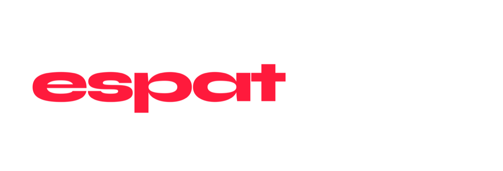

The ecosystem's newest venture, betting that the next edge in AI isn't a smarter model — it's a system that remembers.
As large language models became more accessible and interchangeable across the industry, ESPAT's leadership saw the differentiation shifting away from raw model capability and toward something harder to copy: systems that could persist, learn and stay reliable across long-running relationships with creators and audiences — not just answer a single prompt well.
For a studio built on production and distribution relationships, the risk of sitting out that shift was real. The opportunity was building AI infrastructure suited to ESPAT's own scale and complexity, rather than adopting someone else's off-the-shelf tool.
In February 2026, ESPAT Labs — with Dante Simpson, Co-Founder and CMO of ESPAT, leading the announcement — unveiled a strategic partnership with Backboard.io, co-founded by Robert Imbeault. Backboard's platform is built around durable, memory-driven AI architecture: systems designed to retain context and adapt over long horizons, rather than generative tools that reset with every session.
As language models become more accessible and interchangeable, the real opportunity lies in systems that can remember, adapt, and evolve alongside the people using them.
Dr. Dante Simpson, Co-Founder & Former CMO of ESPAT — February 2026Robert Imbeault framed the fit from Backboard's side: "ESPAT operates at a scale and level of complexity where AI systems need to persist, learn, and remain reliable over long horizons." The stated focus is on adaptive creator tooling and persistent audience engagement — infrastructure designed for enterprise deployment, with security and privacy built in from the start.
As of the partnership announcement, ESPAT Labs and Backboard.io were running targeted pilots and infrastructure integration rather than a fully launched commercial product. ESPAT has since been sold, and Dante Simpson — its Co-Founder and CMO — is no longer affiliated with its current operations. This case study is presented as a record of his work building ESPAT Labs through the Backboard.io announcement.